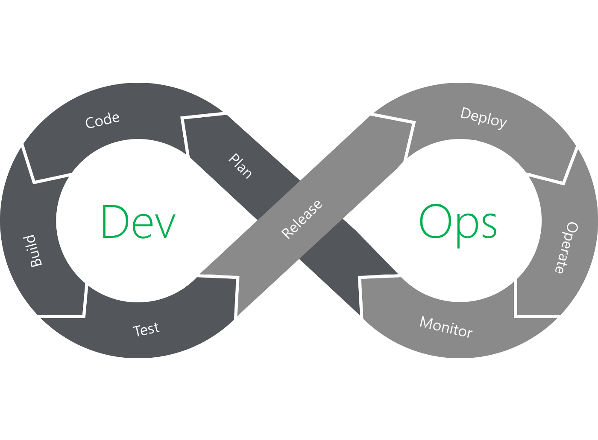
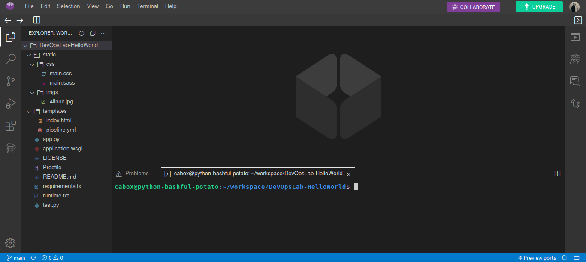

O que é
Development e Operations, é o conceito/processo de desenvolvimento de software que reúne metodologia, prática, ambientes, pessoas e ferramentas que integram tais áreas, de forma mais unificada, relacionada e padronizada, enfatizando melhor comunicação entre os profissionais de tais áreas, favorecendo produtividade e valor ao cliente. Profissionais DevOps são aptos para exercer funções tanto em desenvolvimento de software, quanto na administração dos mesmos. Surgimento a partir do Manifesto Ágil, em 2001, com a adesão de tecnologias e motodologias a fim de facilitar o desenvolvimento de sistemas e, com isso, aumentar a produtividade. DevOps é um processo Agile, adotando os conceitos de metodologias ágeis, além de metodologias como Scrum e Spotify Squads, onde há processo cíclico e entregas fracionadas do produto final, havendo, consequentemente, melhoria contínua. Neste ponto, tem-se os principais conceitos:
- Indivíduos e interações, mais que processos e ferramentas;
- Software em funcionamento, mais que documentação abrangente;
- Responder a mudanças, mais que seguir um plano.
Entre 2001 e 2002, procuraram-se novos mecanismos para agilizar os processos na entrega do software, envolvendo a Agile Conference. O termo DevOps surgiu em 2009, originado a partir da Agile Conference de 2008, dando origem, futuramente, aos DevOpsDays - Criada e implantada na Bélgica. Entre os materiais que impulsionaram o conceito, tem-se o livro Phoenix Project e o site Reliability Engineering.
Objetivos de ambiente DevOps
- Melhorar frequência de deploys;
- Automatizar processos;
- Diminuir ocorrência de erros em novas versões;
- Curtos períodos de tempo para mudanças e melhorias;
- Recuperação rápida à falhas no ambiente;
- Padronização dos processos de configuração e servidores.
Pilares do DevOps (C.A.M.S)
- Culture: Respeitar a cultura, compartilhando e colaborando com as relações saudáveis entre todas as áreas, trabalhando junto e atingindo resultados;
- Automation: Automatizar quando possível, eliminando o máximo de trabalho laboral possível.
- Measure: Medir tudo o que for possível, de processos a pessoas, para seguir sempre com o processo de melhoria contínua, coração do DevOps;
- Sharing: Ambientes DevOps têm como características fundamentais a cultura Blameless (Sem culpa), favorecendo compartilhamento e segurança aos envolvidos.
Skills envolvidas
- Cultura e compartilhamento (Metodologias agiles, como Scrum e Spotify Squads. Utilização de OKR (Objectives, Key Results) para evolução nos conceitos da área);
- Programação e instalação de softwares;
- Gerenciamento de servidores, virtualização (Softwares como Vagrant), containers (Microservices. Softwares como Docker, Kubernetes), redes e segurança;
- Criação de scripts;
- Instalação e configuração de middlewares (Programas que fornecem serviços para aplicações de outros programas. Exemplo Apache, nginx);
- Versionamento e sistemas VCS (Softwares como Git, Github, Gitlab);
- Automatização de tarefas e gerenciamento de configurações (Cloud como AWS, Azure, GCP. On Premises, infraestrutura local. CI/CD. Softwares como Ansible, Chef, Puppet);
- Infraestrutura como código;
- Observabilidade (Monitoramento da infraestrutura e do software. Softwares como Prometheus e Zabbix);
Pipeline DevOps
Pipeline tem como objetivo automatizar o processo de entrega de infraestrutura ou software de forma rápida, garantindo qualidade, testes, estabilidade e escalabilidade. Desenvolvimento agile de software está diretamente ligado a uma pipeline de software. Uma pipeline de entrega de software normalmente constitui-se das etapas:
- Planejamento;
- Análise;
- Desenho;
- Implementação;
- Testes e Integração;
- Deploy e Revisão.
É um processo em ciclos, onde define-se o entregável que é trabalhado até sua conclusão. Após isso, inicia-se novo ciclo, definindo novamente o entregável e trabalhando até sua conclusão. Pipeline DevOps tem como base uma pipeline agile, diferenciando-se em alguns pontos. Trabalha-se com entregáveis, porém o processo é contínuo (Melhoria contínua). Tem-se 2 ciclos, Dev e Ops, compostos das etapas:
-
Dev:
- Planejar: Listagem de requerimentos/requisitos e criação de cards onde serão definidas as atividades da Sprint. Ferramentas utilizadas: Boards Kanban - Jira, Trello, Wekan, Notion;
- Desenvolver ou codificar: Organização do código e da colaboração entre as equipes. Ferramentas utilizadas: Git, Github, Gitlab;
- Construir/Build: Geração do artefato entregável, seja esse uma library ou pacote executável. Ferramentas utilizadas: Gradle, Docker, Maven, Packer;
- Testar: Efetuar diversos testes, garantindo que o entregável funcione como planejado. O QA Engineer (Software quality assurance) é o profissional que os realiza. Ferramentas utilizadas: Selenium, JUnit, pytest, inspec.
- Lançar/Deploy: Lançamento da aplicação para ambiente de produção. Ferramentas utilizadas: Terraform, Ansible, Chef, Puppet, Powershell;
- Implantar e operar: Garantir que o artefato testado esteja em execução. Ferramentas utilizadas: Docker, rkt, Kubernetes, Nomad, OpenShift, clouds como AWS, Azure, GCP;
- Monitorar: Garantir que o sistema encontra-se saudável, ou seja, de acordo com o planejado para seu funcionamento, dentro dos requisitos com eficiência. Monitora-se IPs, DNS, arquivos de logs, status de APIs. Ferramentas utilizadas: Prometheus, Grafana, Elasticstack, Datadog, Splunk, Nagios.
Ops:

CI/CD
Para realizar a integração de todos os passos de uma pipeline DevOps, precisa-se seguir estruturas CI (Continuous Integration - Integração contínua) e CD (Continuous Delivery/Deployment - Entrega contínua). CI é responsável por ligar todas as partes do processo, ou gatilho que faz com que o processo ou ferramenta A conecte-se ao processo ou ferramenta B, trabalhando para garantir integração contínua entre cada elo do processo. CD é o processo de entrega do produto final. No Deployment, essa entrega final é totalmente automatizada, sem necessidade de intervenção humana. No Delivery, o produto é entregue a um usuário final, que decide se o produto será lançado, e em que momento. A escolha entre ambas dependerá do modelo de negócios utilizado.
Git Ops
Diferente do DevOps, Git Ops é a implementação da automação no Git Server, onde todo o desenvolvimento agile e levado do repositório local ao repositório remoto, através do Git. Webhook é uma forma de recebimento de informações ao longo de um evento. É utilizado como gatilho para disparo de funcionalidades, tarefas ou ações após um sistema A comunicar-se com o sistema B. Para trabalhar com Git Ops, desenvolve-se o código em repositório local, em Branch não principal (Não master). O código é enviado para o repositório remoto (Git Server), criando-se o Pull Request para, após Review, efetuar o Merge do código. Após tais passos, é ativado um Webhook para dar prosseguimento do processo de entrega.
ChatOps trabalha com os conceitos de GitOps, sendo a junção das tarefas de automação e colaboração. É delegar a responsabilidade de tarefas e ações para bot interno, que também faz parte da organização e está executando as conversas. É uma metodologia assim como DevOps (ChatOps = Chat + DevOps). O funcionamento se dá por meio de aplicação de chat (Slack, Rocket.Chat, Microsoft Teams), adiciona-se bots para executar as ações da infraestrutura, através de comandos enviados pelas equipes de profissionais DevOps.
Ferramentas DevOps
Uma das características do DevOps é a utilização, geralmente, de ferramentas Open Source, que fornecem melhor personalização às equipes, evitando vendor lock-in (Aprisionamento tecnológico perante a ferramenta). Existem inúmeras ferramentas para automatização em DevOps, inclusive fora criada uma tabela periódica com as principais do mercado, acesse-a aqui. Entre as principais ferramentas para cada estágio, tem-se:
- Plan: Trello, Git e Github/Gitlab, Notion, Draw.io/Diagrams.net;
- Code: Git, editor de texto (VSCode, Sublime Text, Atom, etc);
- CI/CD: Jenkins e Github/Gitlab
- Test: ChefInspect, Molecule, Selenium;
- Build/Release/Deploy: Docker, Ansible, Kubernetes, Terraform;
- Monitor/Operate: Prometheus, Grafana, Zabbix, Rocket.chat, Slack, Graylog, Fluentd.
Criar pipeline DevOps
Para a criação da pipeline DevOps a seguir, será seguido o fluxo de trabalho abaixo. Será utilizado o Github Actions para o processo automatizado de Deploy, que atualizará, no repositório, os status do CI usando o arquivo 'pipeline.yml'. Após a integração concluir, o Github Actions efeturará o deploy da aplicação Heroku, deixando-a disponível publicamente. A aplicação que será feito deploy será uma aplicação web python flask de Hello World, que deverá ser feito 'fork' da mesma, no endereço https://github.com/4linux/DevOpsLab- HelloWorld/. Caso o link acima não abra, acesse aqui.

Passo a passo:
- Clonar aplicação na máquina local (Ver post Git e Github para configuração e passo a passo desse processo)
- Acessar diretório do projeto: cd DevOpsLab-HelloWorld 
- No Github do projeto, aba 'Projects', 'New Project' para inserir o board Kanban, para criar o planejamento da aplicação, informando nome 'Pipeline DevOps' e descrição 'Projeto de Pipeline DevOps para o DevOps Lab Hello World' e template 'Basic Kanban', confirmando criação do projeto
- Criar Cards To Do
- Criar app no Heroku
- Coletar chave API do Heroku
- Configurar Secrets no Github
- Criar Pipeline no Github Actions
- Efetuar o primeiro deploy da aplicação
- Modificar a aplicação e efetuar o deploy
- Mover card 'Criar app no Heroku' para In Progress
- Acessar Heroku, 'Create New App', nome 'devops-SEUNOMESOBRENOME', 'Create app'
- Voltar ao Kanban e mover o card 'Criar app no Heroku' para Done
- Mover card 'Coletar chave API do Heroku' para In Progress
- No Heroku, no perfil do usuário, 'Account settings', API Key, 'Reveal', copiar key
- Mover card 'Coletar chave API do Heroku' para Done
- Mover card 'Configurar Secrets no Github' para In Progress
- No Github do projeto, aba 'Settings', sessão 'Secrets/Actions', 'New repository secret'
- Name 'HEROKU_API_KEY', Value 'Colar chave Heroku', Add secret
- Name 'HEROKU_APP_NAME', Value 'devops-SEUNOMESOBRENOME', Add secret
- Name 'HEROKU_USER_EMAIL', Value 'Seu email do Heroku', Add secret
- Mover card 'Configurar Secrets no Github' para Done
- Mover card 'Criar Pipeline no Github Actions' para In Progress (Actions é ferramenta de automação de workflow, para implemetar CI/CD diretamente do Github, onde deve-se criar no repositório o diretório e arquivo '.github/workflows/arquivoCI')
- No diretório do projeto, criar diretórios com o comando: mkdir -p .github/workflows

Elaborado por Mateus Schwede
ubsocial.github.io